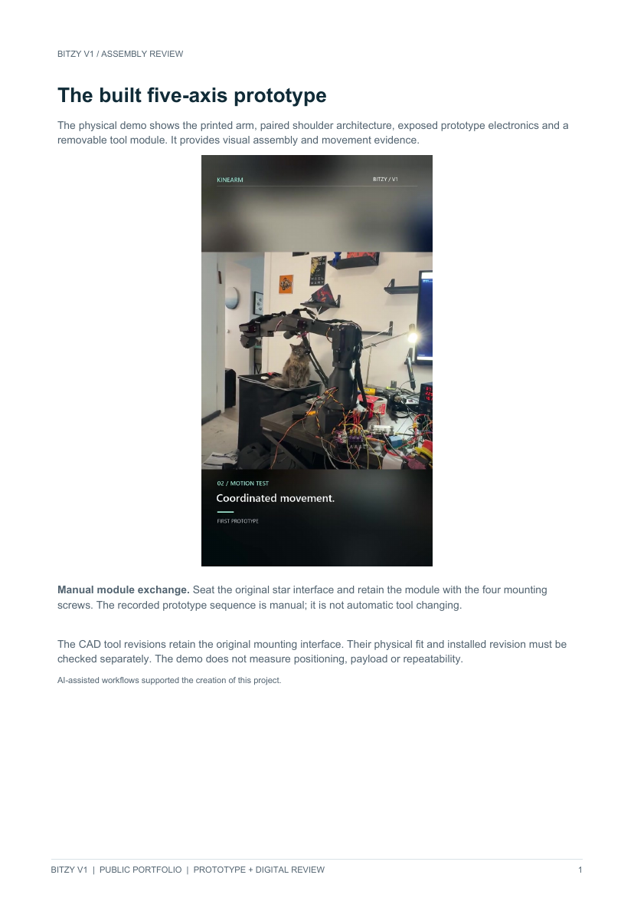
Review / 2 pages
Assembly review
Physical prototype assembly and clearly labeled historical kinematic references.
View assembly review PDF ↗Modular Robotic
Arm
A built five-axis robot combining printed mechanics, embedded control and interchangeable tooling in an inspectable bench prototype.
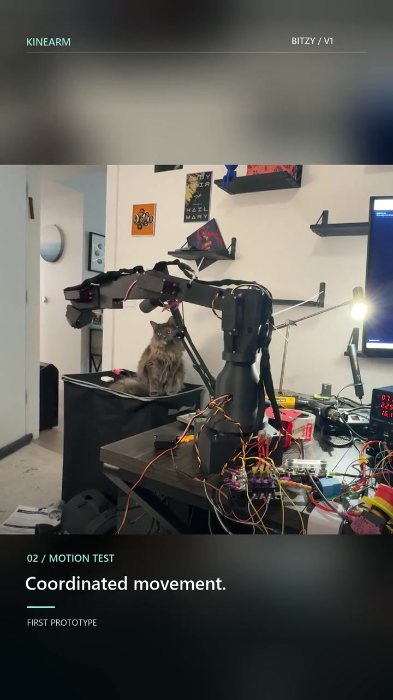
Bitzy is the physical robot developed under KineArm. An earlier six-axis kinematics study evolved into a built five-axis arm with printed mechanics, paired shoulder actuation and a common star/four-screw tool interface.
The project connects mechanical design, fabrication, calibration, embedded control and editable teach-and-replay motion. Gripper and screwdriver tooling share the original mounting interface so their mechanisms can develop independently.
Read the case studyBuilt hardware. Continuing engineering.
The prototype is moving. Gripper Rev F is printed, fitted and driven from the control page, and screwdriver R2 has completed CAD and print packages. Tool force, load and durability, positioning accuracy and repeatability have not been established quantitatively.
AI-assisted workflows supported the creation of this project. My Python work is carried out entirely through AI-assisted workflows using Claude Code and Codex.
Selected public reviews built from actual footage, native CAD views and recorded engineering evidence. Historical sketches and nominal dimensions are labeled by revision.

Physical prototype assembly and clearly labeled historical kinematic references.
View assembly review PDF ↗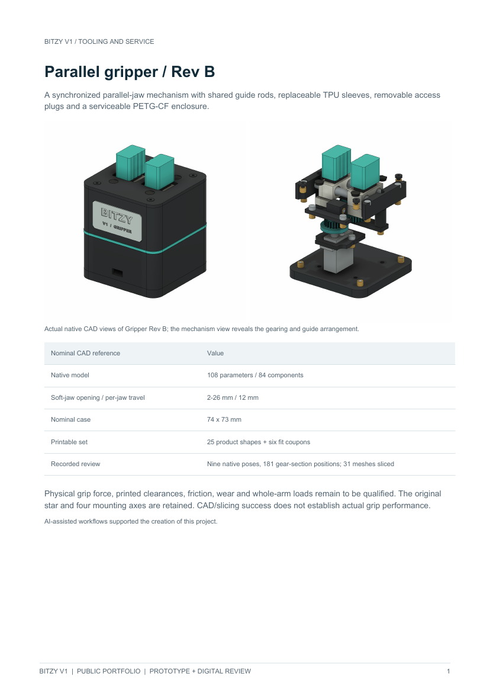
Actual Gripper Rev B and screwdriver R2 CAD views, nominal dimensions and qualification limits.
View tooling & service PDF ↗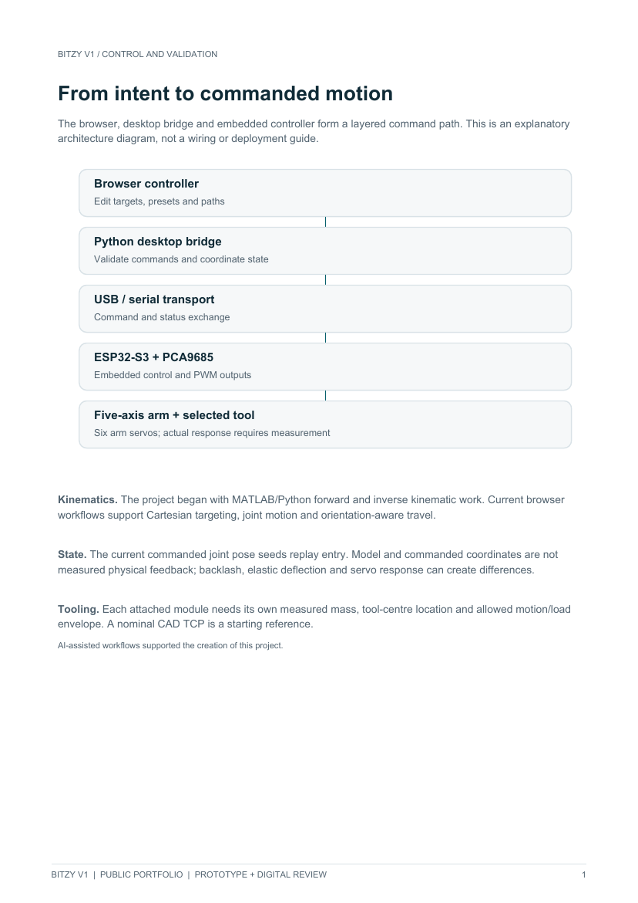
Command architecture, recorded motion checks and the next physical measurements.
View control & validation PDF ↗5 controlled axes
6 arm servos, paired shoulder
Original star / four screws
Manual interchangeable modules
ESP32-S3 + PCA9685
Python bridge / browser interface
2–26 mm nominal opening
108 parameters / 84 CAD components
4:1 drive / 3 mm compliance
136 parameters / 67 CAD components
~475 mm / 500 g + tool
Design references; not qualified results
Actual fit, grip, torque, repeatability, loaded motion and reliability require physical measurements. Intermittent joint/serial behavior remains unresolved.
Validation results and remaining hardware tests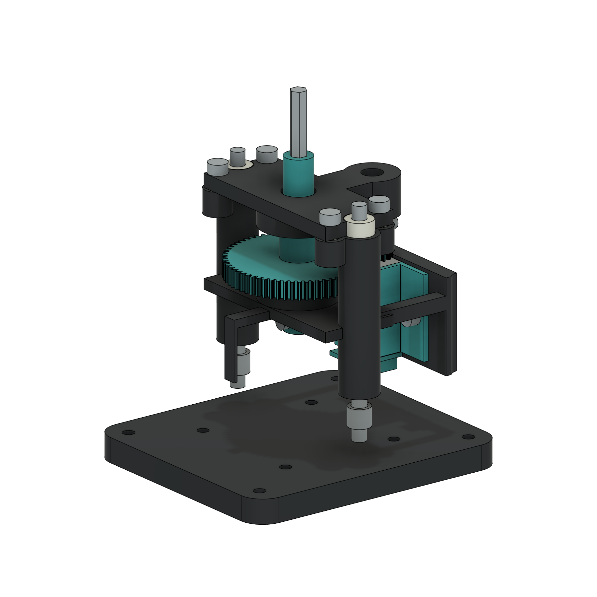
Bitzy V1 is built and remains active. The next stage is documenting the as-built configuration, qualifying both tools and their TCPs, measuring positioning and load behavior, and investigating intermittent joint response.
A reconciled total build cost is not established. The old power/wiring ledger mixes owned items, ordered packs and deferred equipment, and predates later servo replacements. The figures alongside are partial historical quotes, not the cost of the built arm.
Budget scope and historical price references| Recorded item | USD |
|---|---|
| ESP32-S3 board | $18.99 |
| Latching emergency-stop button | $14.99 |
| 12 AWG wire pair, 25 ft | $34.48 |
| Dedicated 6 V supply (deferred) | $199.99 |
| Verified full build cost | Not established |
Actual assembly and movement, followed by the earlier design study. Playback is manual and silent. Assembly footage includes sped-up segments.
Experimental decision software on the built prototype, September 2026. Bitzy takes a plain-English instruction and a camera view, and a vision-language model running locally proposes one bounded action. Recorded software evidence only; no positioning, payload or accuracy claim.
I label move steps by hand as Correct, Wrong or Unsafe, stored apart from the model's own output; so far some are Correct and some Wrong, and Wrong or Unsafe steps never become training examples. Our current reading is that the camera-to-arm calibration, more than the model's choice, limits the physical result.
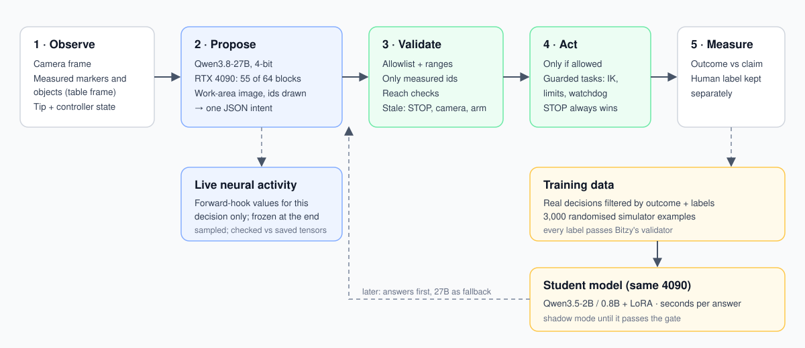
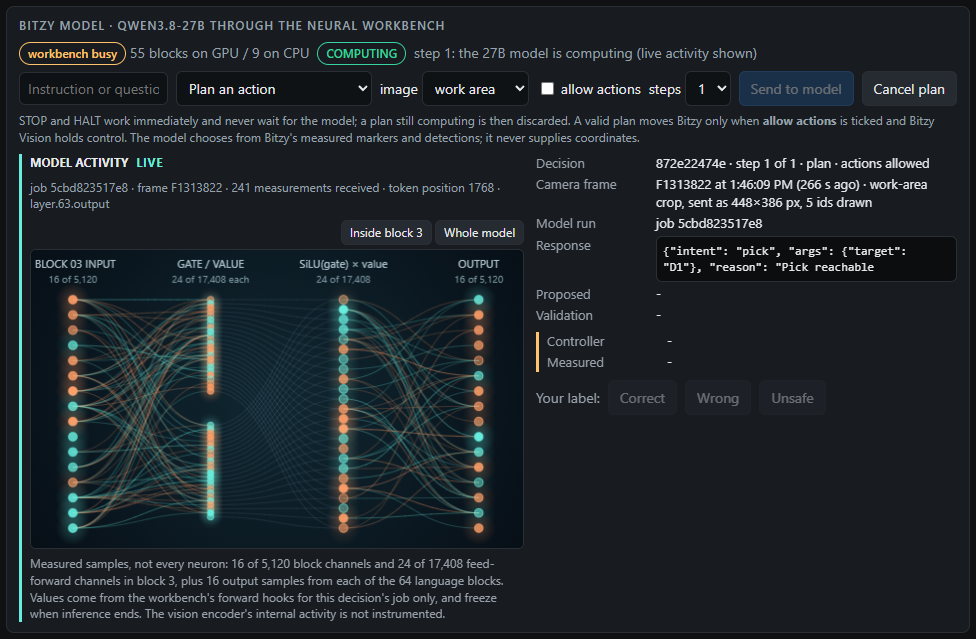
A real pick decision while the 27B writes its answer. The page draws values measured from the model for this job only; validation and any motion wait for the complete answer.
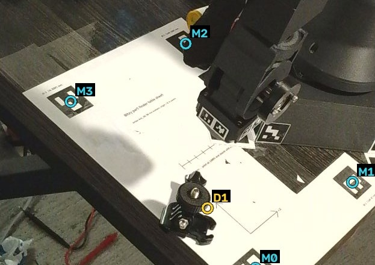
The camera frame is cropped to the measured work area and labelled with Bitzy's own ids. From this view the model chose to pick the listed GoPro mount.
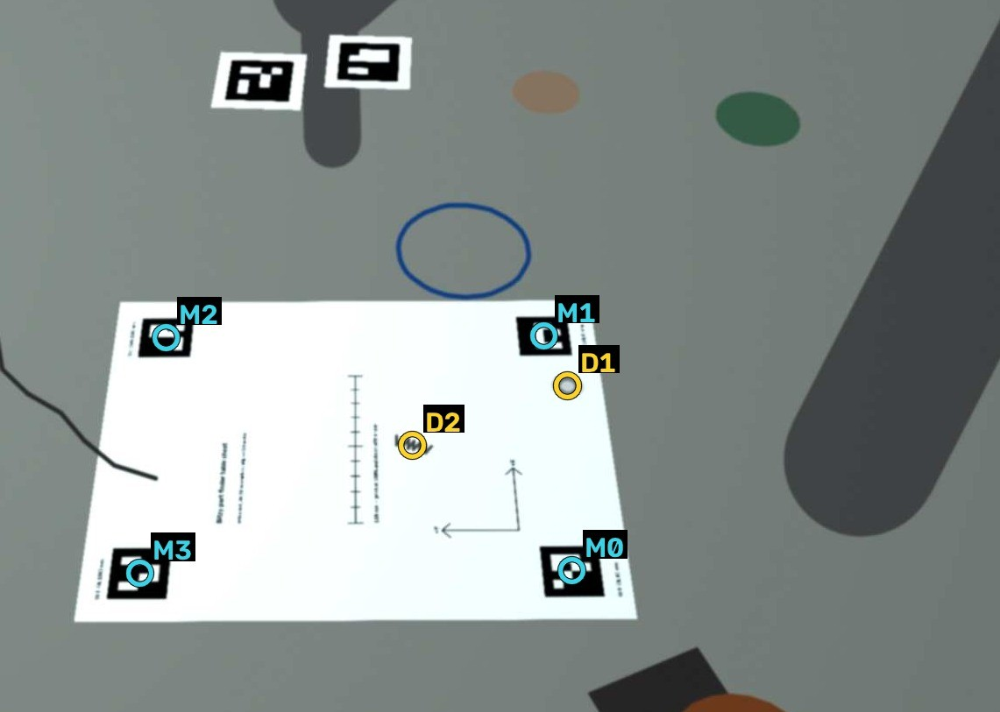
3,000 randomised simulator scenes with rule-based labels, each accepted by Bitzy's validator, plus filtered real decisions and my labels.
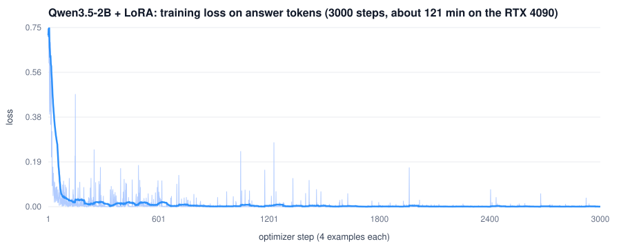
Gripper Rev F, printed, assembled and fitted to the built prototype in September 2026. It mounts on the same interface as the magnet module used for the AI picks and runs from the KineArm control page. Recorded build and software evidence only; grip force, payload and positioning are not measured.
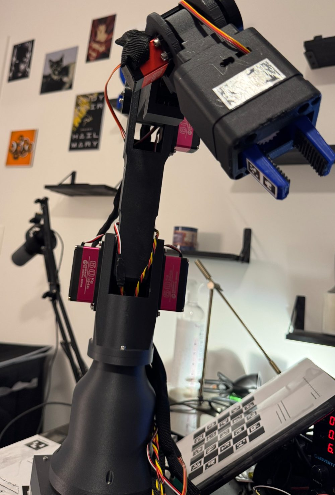
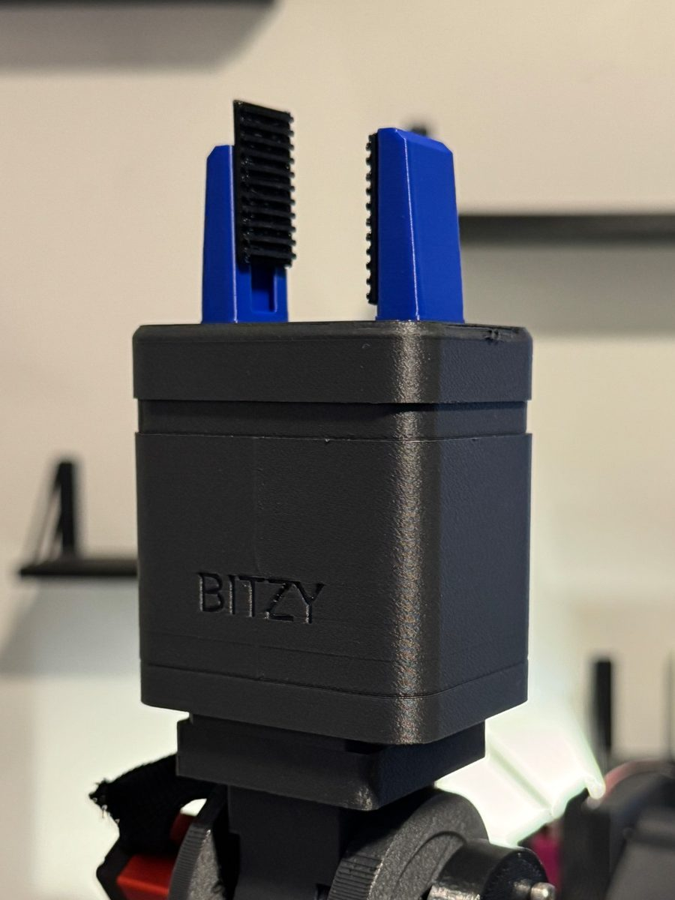
The printed body on Bitzy's wrist with the jaws open. The seat below it is the interface the magnet module uses.
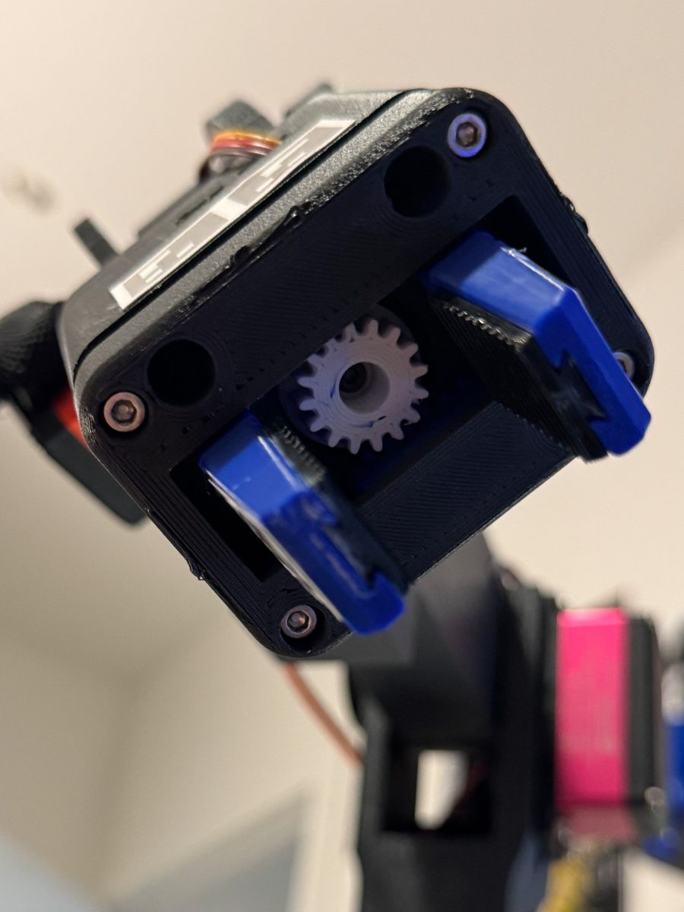
From below with the jaws open: the white pinion on the MG90S moves both jaws together.
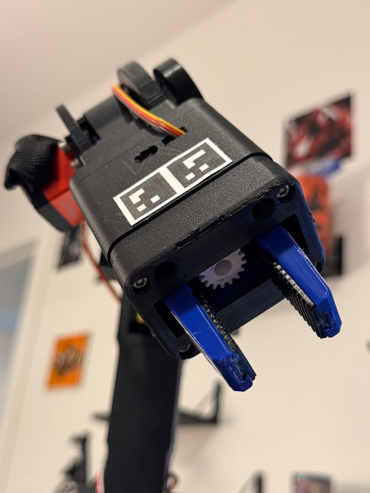
A two-marker strip on a wide face of the body, printed at real size from the generated sheet.
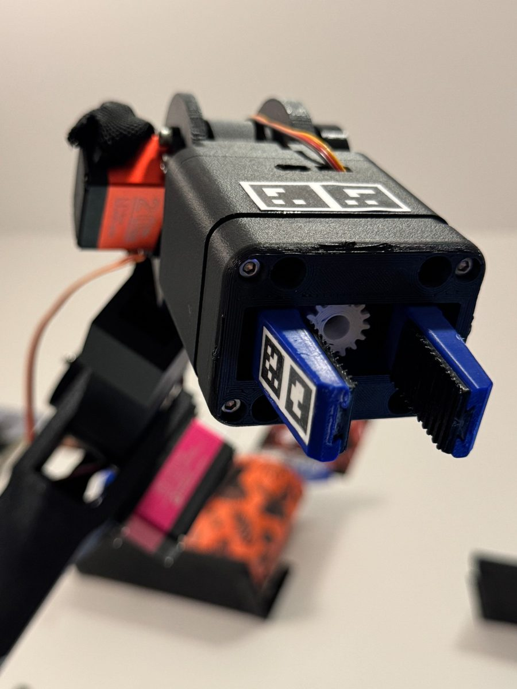
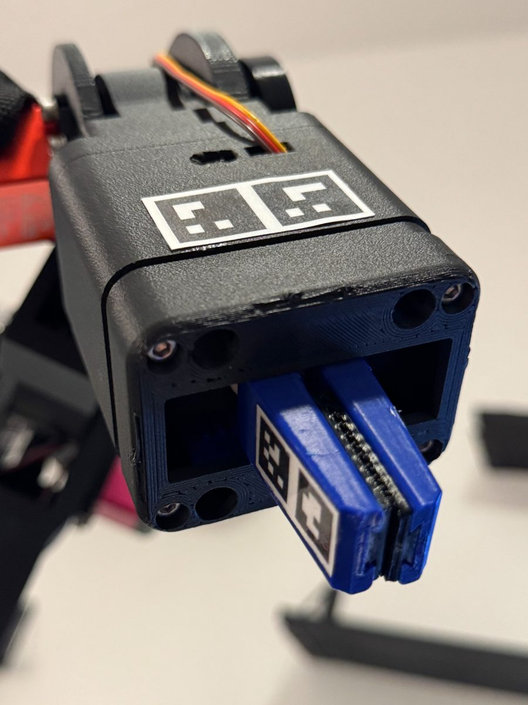
{kind=link}
{kind=link}
{kind=link}
{kind=link}
{kind=link}
{kind=link}
{kind=link}
{kind=link}
{kind=link}
{kind=link}
{kind=link}
{kind=link}